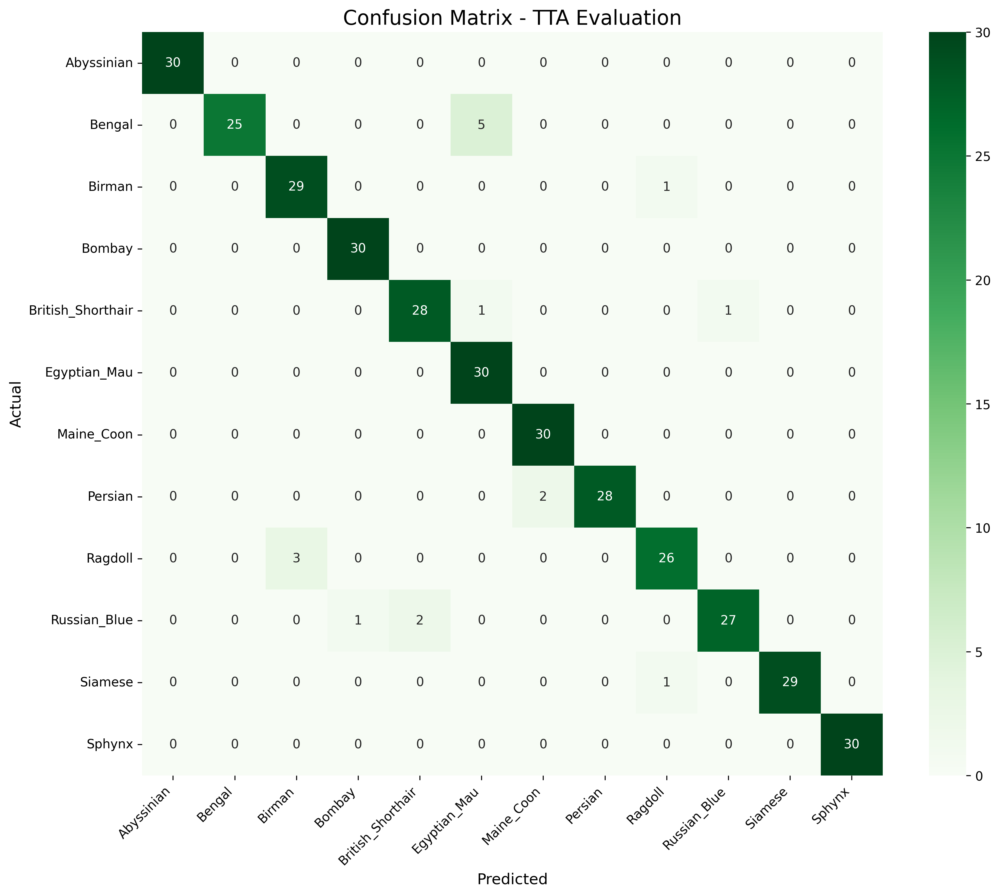

Training an ML Model
I used Claude Code to build a deep learning pipeline to classify cat breeds using EfficientNetV2 with test-time augmentation. Separately, I trained the same dataset on Google Cloud Vertex AI AutoML to compare the two approaches. Dataset: Oxford Pet IIT, filtered to 12 cat breeds with ~200 images each.
I used a two-phase training approach: freeze the backbone for initial epochs, then unfreeze for fine-tuning with discriminative learning rates. Early runs hit ~100% training accuracy but only 60-65% validation, a classic overfitting problem. I also ran into Lambda's missing Nvidia drivers, which kept the training falling back to CPU.
After fixing the drivers and adding regularization, the model improved significantly:
The biggest improvement came from switching to EfficientNetV2-S at 320px. Cat breed classification is a fine-grained task, so the higher resolution helped distinguish subtle differences between breeds.
Final model: 95% macro F1 with strong balance across all 12 breeds. Test-time augmentation added an extra 1-3% accuracy boost. You can test the model yourself here.

The Vertex AI AutoML model trained from scratch over 24 hours and also performed well: